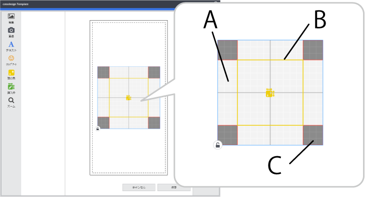

Ao criar um modelo dedicado para utilização com impressão em película, uma área de impressão (80 mm × 80 mm) e uma área de edição (50 mm × 50 mm) são criadas no centro do modelo.
 A: Área de Impressão da película B: Área da película C: Área proibida de impressão da película (nada é impresso nesta área.)
A área de impressão de película indica o intervalo de impressão no modelo. Se arrastar esta área para movê-la, a posição de impressão relativa ao objeto a ser impresso será alterada.
: Ative isto quando não desejar alterar a posição ou tamanho do objeto.
Disponha imagens, carateres e áreas de edição na área de impressão. Se quaisquer itens estiverem fora desta área, ocorrerá um erro, e não será possível guardar o modelo. Dependendo do modelo que está a usar, às vezes é melhor limitar as posições de plano de impressão de objeto, dependendo do modelo utilizado. Um exemplo é quando é possível que os resultados da impressão sejam indistinguíveis, mesmo que todos os itens estejam na área de impressão. Para detalhes, consulte a documentação para o modelo que está a usar.